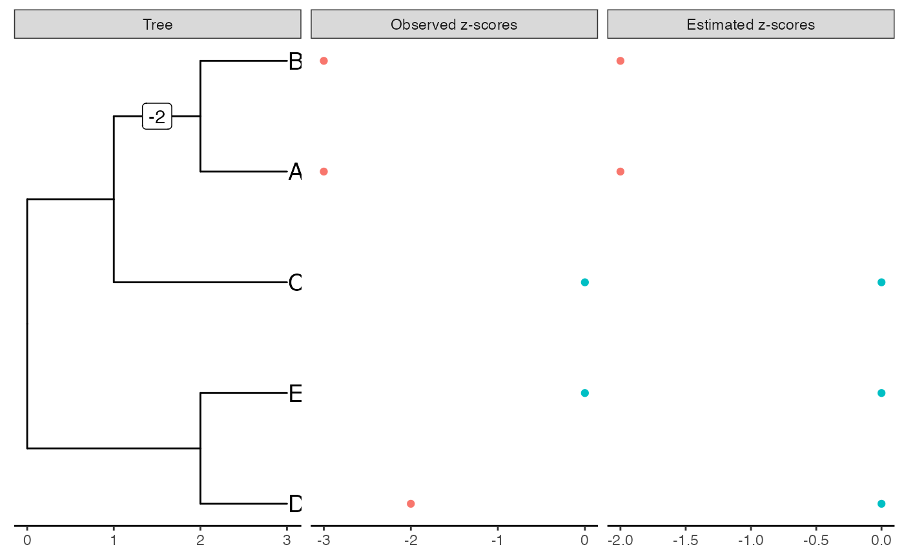
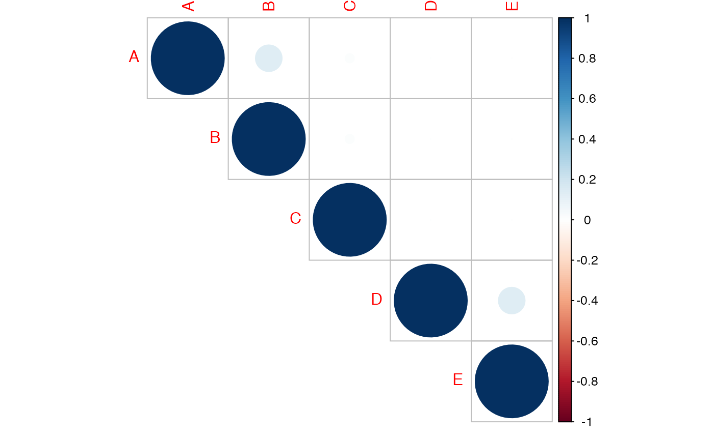

library(ggplot2)
library(tibble)
library(evabic)
library(tictoc)
library(dplyr)
library(tidyr)
library(zazou)
library(purrr)
library(ape)
theme_set(theme_minimal())Deterministic situation
tree <- read.tree(text = "(((A:1,B:1):1,C:2):1,(D:1,E:1):2);")
tree$tip.label
#> [1] "A" "B" "C" "D" "E"incidence_mat <- incidence_matrix(tree)
incidence_mat + 0
#> [,1] [,2] [,3] [,4] [,5] [,6] [,7] [,8]
#> A 1 1 1 0 0 0 0 0
#> B 1 1 0 1 0 0 0 0
#> C 1 0 0 0 1 0 0 0
#> D 0 0 0 0 0 1 1 0
#> E 0 0 0 0 0 1 0 1true_shifts <- c(0, -3, 0, 0, 0, 0, -2, 0)
obs_zscores <- true_zscores <- incidence_mat %*% true_shifts
covar_mat <- diag(nrow = 5, ncol = 5)covariance_matrix(tree, alpha = 10^3)
#> A B C D E
#> A 1 0 0 0 0
#> B 0 1 0 0 0
#> C 0 0 1 0 0
#> D 0 0 0 1 0
#> E 0 0 0 0 1plot_shifts(tree, true_shifts, true_scores = true_zscores)
#> Warning: Removed 7 rows containing missing values (geom_label).
estimation <- estimate_shifts(rep(0, 8), zscores = obs_zscores,
tree = tree, alpha = 10^3, lambda = 0)
estimation
#> Tree is binary with 5 leafs and 8 branches
#> Covariance matrix has been estimated from an OU with alpha = 1000 and sigma = 44.721
#> ---
#> Optimisation algorithm: L-BFGS-B
#> Regularization parameter: lambda = 0
#> Objective value: 0
#> BIC: 55.241
#> pBIC: -Inf
#> ---
#> Estimated shifts: 0 -2 -1 -1 0 0 -2 0 ...
#> 5 shifts have been identified (ie 37.5 % of sparsity)
#> A parsimonious solution would involve 3 shifts
#> ---
#> Observed z-scores: -3 -3 0 -2 0
#> Estimated z-scores: -3 -3 0 -2 0
#> 4 z-scores have been shifted (ie 20 % of sparsity)
plot(estimation)
#> Warning: Removed 4 rows containing missing values (geom_label).
Solution without penalty is not sparse due to ill-conditioning of the incidence matrix.
estimation <- estimate_shifts(rep(0, 8), zscores = obs_zscores,
tree = tree, alpha = 10^3, lambda = 2)
estimation
#> Tree is binary with 5 leafs and 8 branches
#> Covariance matrix has been estimated from an OU with alpha = 1000 and sigma = 44.721
#> ---
#> Optimisation algorithm: L-BFGS-B
#> Regularization parameter: lambda = 2
#> Objective value: 7
#> BIC: 48.806
#> pBIC: 55.834
#> ---
#> Estimated shifts: 0 -2 0 0 0 0 0 0 ...
#> 1 shifts have been identified (ie 87.5 % of sparsity)
#> A parsimonious solution would involve 1 shifts
#> ---
#> Observed z-scores: -3 -3 0 -2 0
#> Estimated z-scores: -2 -2 0 0 0
#> 2 z-scores have been shifted (ie 60 % of sparsity)
plot(estimation)
#> Warning: Removed 8 rows containing missing values (geom_label).
With a low penalty, the solution is much sparser and closer to the true shifts on branches.
Simulations on a toy example
tree <- read.tree(text = "(((A:1,B:1):1,C:2):1,(D:1,E:1):2);")
set.seed(2019)
covar_mat <- covariance_matrix(tree, alpha = 1)
corrplot::corrplot(covar_mat, type = "upper")
true_shifts <- c(-3, -3, 0, -2, 0)
sqrtcovar <- t(chol(covar_mat))
zscores <- true_shifts + sqrtcovar %*% rnorm(5) # simulate
zscores
#> [,1]
#> A -2.261477
#> B -3.411813
#> C -1.635239
#> D -1.083963
#> E -1.134186Estimate shifts without penalty
The fit is perfect since all observed \(z\)-scores are negative.
estimation <- estimate_shifts(rep(0, 8), zscores = zscores,
tree = tree, alpha = 1, lambda = 0)
estimation
#> Tree is binary with 5 leafs and 8 branches
#> Covariance matrix has been estimated from an OU with alpha = 1 and sigma = 1.418
#> ---
#> Optimisation algorithm: L-BFGS-B
#> Regularization parameter: lambda = 0
#> Objective value: 0
#> BIC: 23.946
#> pBIC: -Inf
#> ---
#> Estimated shifts: -1.299 -0.963 0 -1.15 -0.336 -0.739 -0.345 -0.395 ...
#> 7 shifts have been identified (ie 12.5 % of sparsity)
#> A parsimonious solution would involve 4 shifts
#> ---
#> Observed z-scores: -2.261 -3.412 -1.635 -1.084 -1.134
#> Estimated z-scores: -2.261 -3.412 -1.635 -1.084 -1.134
#> 5 z-scores have been shifted (ie 0 % of sparsity)
plot(estimation, true_scores = true_shifts)
#> Warning: Removed 2 rows containing missing values (geom_label).
round(data.frame(true = true_shifts, observed = zscores,
estimated = estimation$zscores_est),
digits = 4)
#> true observed estimated
#> A -3 -2.2615 -2.2615
#> B -3 -3.4118 -3.4118
#> C 0 -1.6352 -1.6352
#> D -2 -1.0840 -1.0840
#> E 0 -1.1342 -1.1342The fit degrades as we increase sparsity. [Well, not so much…]
estimation <- estimate_shifts(rep(0, 8), zscores = zscores,
tree = tree, alpha = 1, lambda = 0.1)
estimation
#> Tree is binary with 5 leafs and 8 branches
#> Covariance matrix has been estimated from an OU with alpha = 1 and sigma = 1.418
#> ---
#> Optimisation algorithm: L-BFGS-B
#> Regularization parameter: lambda = 0.1
#> Objective value: 0.445
#> BIC: 19.127
#> pBIC: 31.791
#> ---
#> Estimated shifts: -1.634 -0.615 0 -1.064 0 -1.052 0 0 ...
#> 4 shifts have been identified (ie 50 % of sparsity)
#> A parsimonious solution would involve 3 shifts
#> ---
#> Observed z-scores: -2.261 -3.412 -1.635 -1.084 -1.134
#> Estimated z-scores: -2.248 -3.312 -1.634 -1.052 -1.052
#> 5 z-scores have been shifted (ie 0 % of sparsity)
plot(estimation, true_scores = true_shifts)
#> Warning: Removed 5 rows containing missing values (geom_label).
round(data.frame(true = true_shifts, observed = zscores,
estimated = estimation$zscores_est),
digits = 4)
#> true observed estimated
#> A -3 -2.2615 -2.2482
#> B -3 -3.4118 -3.3118
#> C 0 -1.6352 -1.6337
#> D -2 -1.0840 -1.0524
#> E 0 -1.1342 -1.0524The fit does not depend a lot (on this toy example) on the initial solution.
estimation <- estimate_shifts(c(0, -3, 0, 0, 0, 0, -2, 0),
zscores = zscores, tree = tree,
alpha = 1, lambda = 0.1)
estimation
#> Tree is binary with 5 leafs and 8 branches
#> Covariance matrix has been estimated from an OU with alpha = 1 and sigma = 1.418
#> ---
#> Optimisation algorithm: L-BFGS-B
#> Regularization parameter: lambda = 0.1
#> Objective value: 0.445
#> BIC: 19.127
#> pBIC: 31.791
#> ---
#> Estimated shifts: -1.634 -0.615 0 -1.064 0 -1.052 0 0 ...
#> 4 shifts have been identified (ie 50 % of sparsity)
#> A parsimonious solution would involve 3 shifts
#> ---
#> Observed z-scores: -2.261 -3.412 -1.635 -1.084 -1.134
#> Estimated z-scores: -2.248 -3.312 -1.634 -1.052 -1.052
#> 5 z-scores have been shifted (ie 0 % of sparsity)
plot(estimation, true_scores = true_shifts)
#> Warning: Removed 5 rows containing missing values (geom_label).Simulations from real data
set.seed(42)
data(alcohol)
abund <- alcohol$X[, alcohol$Y == "Low"]
groups <- sample(c("A", "B"), size = ncol(abund), replace = TRUE)
tree <- force_ultrametric(alcohol$tree)
otu_to_kepp <- names(which(rowSums(abund > 0) > 20))
abund <- abund[otu_to_kepp, ]
tree <- drop.tip(tree, setdiff(tree$tip.label, otu_to_kepp))
N_branch <- length(tree$edge.length)pvalues_original <- test_wilcoxon(abund, groups)$p.value
zscores_original <- p2z(pvalues_original)
plot_shifts(tree, shifts = NA, obs_scores = zscores_original)
#> Warning: Removed 253 rows containing missing values (geom_label).
clusters <- sample(10, 4)
table(clustering[which(clustering %in% clusters)])
#>
#> 2 4 5 8
#> 7 9 8 9
otus_da <- names(clustering[which(clustering %in% clusters)])
abund[otus_da, groups == "B"] <- 4 * abund[otus_da, groups == "B"]pvalues <- test_wilcoxon(abund, groups)$p.value
zscores <- p2z(pvalues)
plot_shifts(tree, NA, obs_scores = zscores,
sup_scores = list(list(scores = clustering,
title = "Clusters",
color = as.character(clustering)),
list(scores = zscores - zscores_original,
title = "Difference in z-scores after fold-change",
color = as.character(sign(zscores - zscores_original)))))
#> Warning: Removed 253 rows containing missing values (geom_label).
tic()
estimation <- estimate_shifts(rep(0, N_branch), zscores = zscores, tree = tree,
alpha = c(0.2, 0.5, 1, 2, 5), method = "shooting")
toc()
#> 11.12 sec elapsed
estimation
#> Tree is binary with 127 leafs and 252 branches
#> Covariance matrix has been estimated from an OU with alpha = 0.5 and sigma = 1.516
#> ---
#> Optimisation algorithm: shooting with model selection
#> Regularization parameter: lambda = 4.478
#> Objective value: 114.265
#> BIC: 442.987
#> pBIC: 502.075
#> ---
#> Estimated shifts: 0 0 0 0 0 0 0 0 0 0 ...
#> 6 shifts have been identified (ie 97.6 % of sparsity)
#> A parsimonious solution would involve 6 shifts
#> ---
#> Observed z-scores: 1.58 -0.434 -0.152 -1.363 -1.521 -3.632 -4.547 0.266 1.167 1.959 ...
#> Estimated z-scores: 0 -0.361 -0.361 -0.361 -0.361 -1.812 -1.812 -0.361 0 0 ...
#> 50 z-scores have been shifted (ie 60.6 % of sparsity)
plot(estimation,
sup_scores = list(list(scores = zscores - zscores_original,
title = "Difference in z-scores after fold-change",
color = as.character(sign(zscores - zscores_original)))))
#> Warning: Removed 247 rows containing missing values (geom_label).
estimation$optim_info$bic_selection %>%
mutate(n_shifts = map_dbl(shift_est, ~ sum(. != 0))) %>%
select(-shift_est)
#> alpha lambda objective_value bic pbic n_shifts
#> 1 0.2 11.5895510 128.36596 463.8588 482.5496 1
#> 2 0.2 6.9477533 126.23872 467.5034 510.8942 4
#> 3 0.2 4.1650687 118.86070 478.2711 560.2646 9
#> 4 0.2 2.4968931 107.43405 498.5981 625.3121 15
#> 5 0.2 1.4968481 92.77746 567.3080 807.4456 31
#> 6 0.2 0.8973368 75.67515 698.1057 1133.9805 59
#> 7 0.2 0.5379393 58.66125 808.7406 1402.2012 82
#> 8 0.2 0.3224861 43.60607 850.5235 1499.0544 90
#> 9 0.2 0.1933254 32.25687 890.3922 1584.0655 97
#> 10 0.2 0.1158955 24.52081 914.6840 1633.8293 101
#> 11 0.5 12.4598888 123.08493 450.8865 469.6439 1
#> 12 0.5 7.4695071 121.03595 452.4125 495.9821 4
#> 13 0.5 4.4778519 114.26468 442.9867 502.0748 6
#> 14 0.5 2.6844017 104.13248 454.7843 551.4858 11
#> 15 0.5 1.6092565 91.26661 524.5214 742.9019 28
#> 16 0.5 0.9647239 75.69281 626.9621 1004.0246 51
#> 17 0.5 0.5783368 59.86505 753.8705 1315.8445 78
#> 18 0.5 0.3467038 45.40804 808.6321 1444.2905 89
#> 19 0.5 0.2078435 34.17908 853.1934 1541.8410 97
#> 20 0.5 0.1245989 26.40135 863.9106 1558.3618 98
#> 21 1.0 14.2023143 118.62973 453.2767 472.1561 1
#> 22 1.0 8.5140638 116.26040 453.2375 489.9166 3
#> 23 1.0 5.1040471 110.23410 446.6772 498.6840 5
#> 24 1.0 3.0597959 101.16245 455.9709 538.0927 9
#> 25 1.0 1.8342994 90.21485 503.2028 672.5196 21
#> 26 1.0 1.0996336 76.56009 584.7224 882.0722 40
#> 27 1.0 0.6592130 62.33575 694.9864 1155.7591 64
#> 28 1.0 0.3951878 48.87168 793.4424 1397.5431 85
#> 29 1.0 0.2369089 37.87408 824.4970 1465.1870 91
#> 30 1.0 0.1420231 30.08167 837.2878 1491.6887 93
#> 31 2.0 18.0004476 118.98448 480.4662 510.4036 2
#> 32 2.0 10.7909848 115.12024 474.8733 504.8106 2
#> 33 2.0 6.4690254 109.35668 487.6281 551.0588 6
#> 34 2.0 3.8780789 100.60392 481.5456 541.8076 6
#> 35 2.0 2.3248472 91.11725 514.9153 635.8189 14
#> 36 2.0 1.3937093 79.87367 560.9370 757.0079 25
#> 37 2.0 0.8355068 67.32071 637.8675 946.5654 42
#> 38 2.0 0.5008731 55.37545 735.4287 1183.2453 63
#> 39 2.0 0.3002656 45.04711 777.5286 1284.2421 72
#> 40 2.0 0.1800045 37.47415 806.4310 1353.7822 78
#> 41 5.0 21.6884593 123.05421 568.1650 616.0079 4
#> 42 5.0 13.0018897 117.42555 566.3761 614.2190 4
#> 43 5.0 7.7944281 111.24370 574.2823 641.2588 6
#> 44 5.0 4.6726369 102.69698 576.7270 648.3719 7
#> 45 5.0 2.8011722 93.26520 594.0957 696.1088 11
#> 46 5.0 1.6792586 83.16735 635.0764 798.9320 20
#> 47 5.0 1.0066891 71.63576 705.2032 968.2871 35
#> 48 5.0 0.6034943 60.45821 809.9253 1218.1827 57
#> 49 5.0 0.3617853 50.72128 818.4772 1237.0780 59
#> 50 5.0 0.2168846 43.45897 871.2917 1361.9866 70detected <- names(which(estimation$zscores_est != 0))
pvalues_bh <- p.adjust(pvalues, method = "BH")
detected_bh <- names(which(pvalues_bh < 0.05))
mm <- c("TPR", "FPR", "FDR", "ACC", "F1", "BACC")
ebc_tidy(detected, otus_da, m = length(otu_to_kepp), measures = )
#> TPR FPR FDR ACC F1
#> 1 1 0.1808511 0.34 0.8661417 0.7951807
ebc_tidy(detected_bh, otus_da, m = length(otu_to_kepp), measures = mm)
#> TPR FPR FDR ACC F1 BACC
#> 1 0.2121212 0.0106383 0.125 0.7874016 0.3414634 0.6007415
ebc_tidy(c(), otus_da, m = length(otu_to_kepp), measures = mm)
#> TPR FPR FDR ACC F1 BACC
#> 1 0 0 NaN 0.7401575 0 0.5
ebc_tidy(otu_to_kepp, otus_da, m = length(otu_to_kepp), measures = mm)
#> TPR FPR FDR ACC F1 BACC
#> 1 1 1 0.7401575 0.2598425 0.4125 0.5
map_dfr(list(detected, detected_bh, c(), otu_to_kepp), ebc_tidy,
detected = otus_da, m = length(otu_to_kepp), measures = mm) %>%
mutate(method = c("zazou", "bh", "nothing", "everything")) %>%
select(method, everything())
#> method TPR FPR FDR ACC F1 BACC
#> 1 zazou 0.6600000 0.0000000 0.0000000 0.8661417 0.7951807 0.8300000
#> 2 bh 0.8750000 0.2184874 0.7878788 0.7874016 0.3414634 0.8282563
#> 3 nothing NaN 0.2598425 1.0000000 0.7401575 0.0000000 NaN
#> 4 everything 0.2598425 NaN 0.0000000 0.2598425 0.4125000 NaNran <- rnorm(127)
plot(estimation,
sup_scores = list(list(scores = zscores - zscores_original,
title = "Difference in z-scores after fold-change",
color = as.character(sign(zscores - zscores_original))),
list(scores = p.adjust(pvalues, method = "BH"),
title = "Detected by BH",
color = p.adjust(pvalues, method = "BH") < 0.05)))
#> Warning: Removed 247 rows containing missing values (geom_label).
df_measures_zazou <-
ebc_tidy_by_threshold(estimation$zscores_est, true = otus_da,
m = length(otu_to_kepp), measures = mm) %>%
mutate(method = "zazou")
df_measures_bh <-
ebc_tidy_by_threshold(pvalues_bh, true = otus_da,
m = length(otu_to_kepp), measures = mm)%>%
mutate(method = "bh")
df_measures <- rbind(df_measures_zazou, df_measures_bh)
df_measures %>%
arrange(FPR, TPR) %>%
ggplot() +
aes(x = FPR, y = TPR, color = method) +
geom_point() +
geom_line()